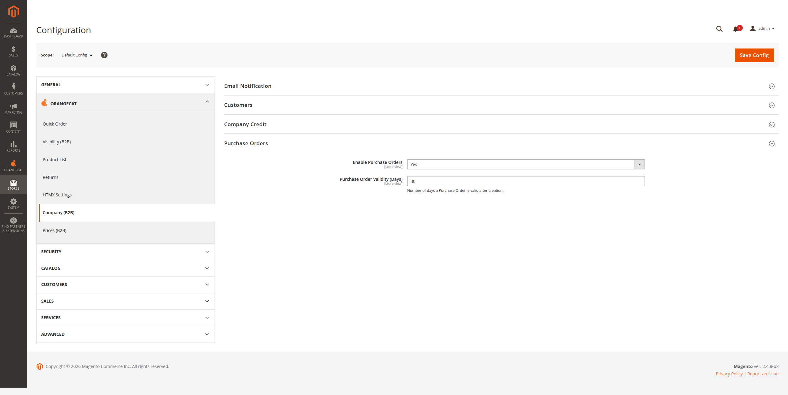
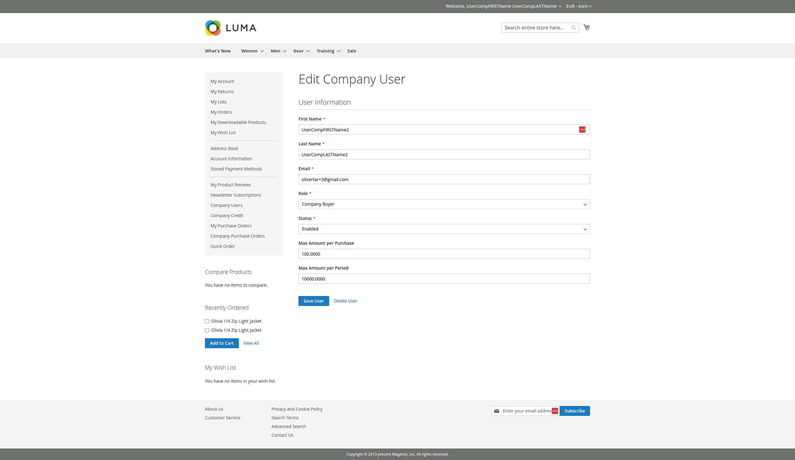
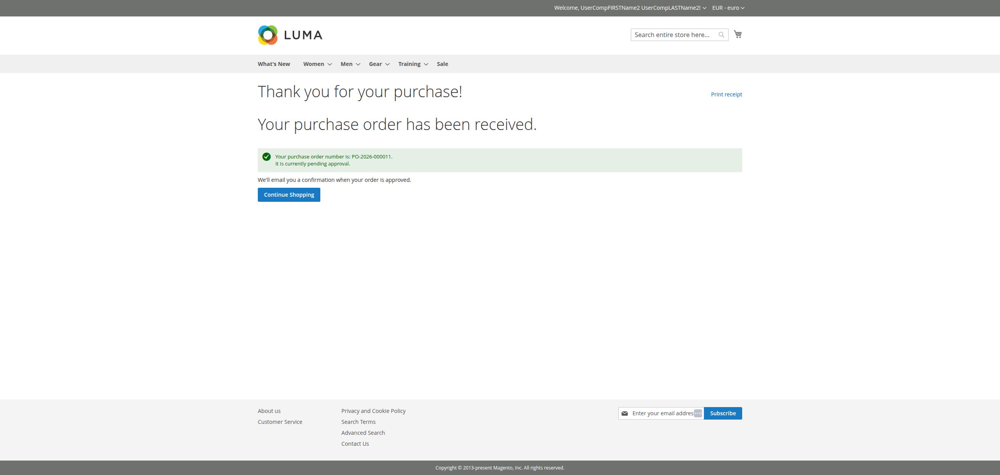
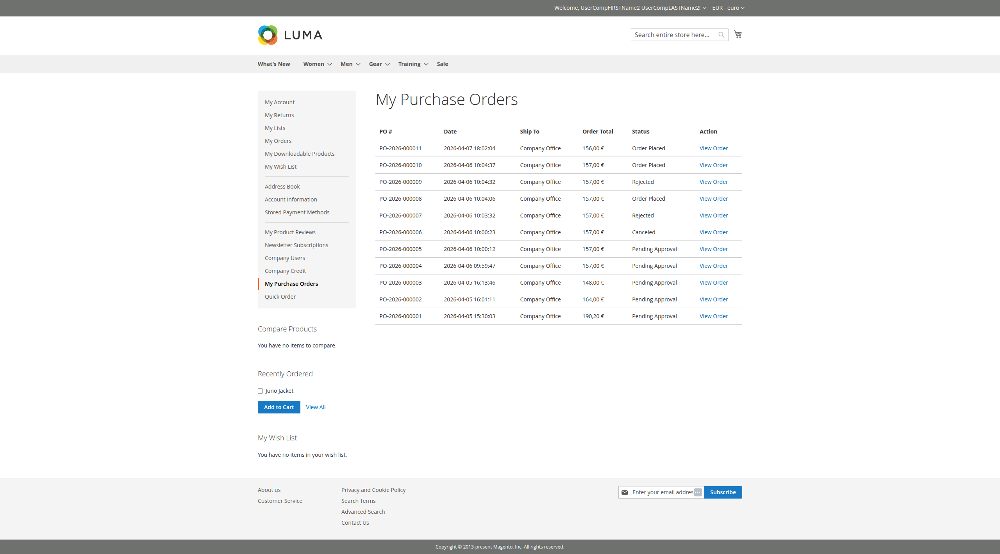
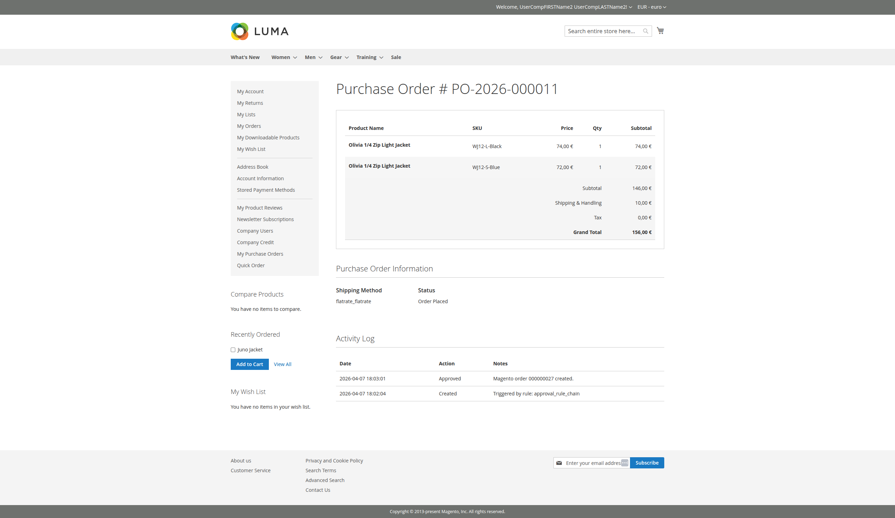
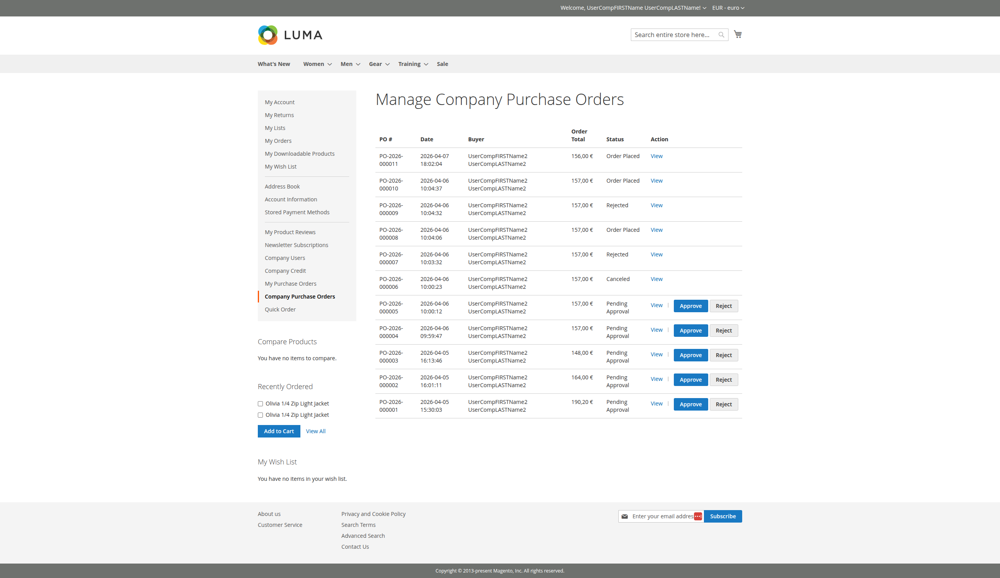
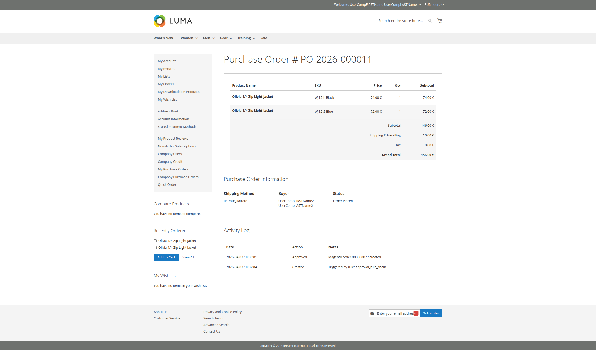
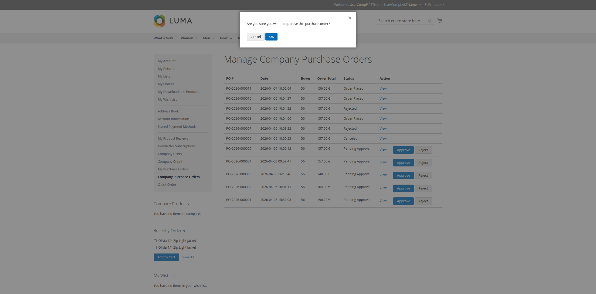
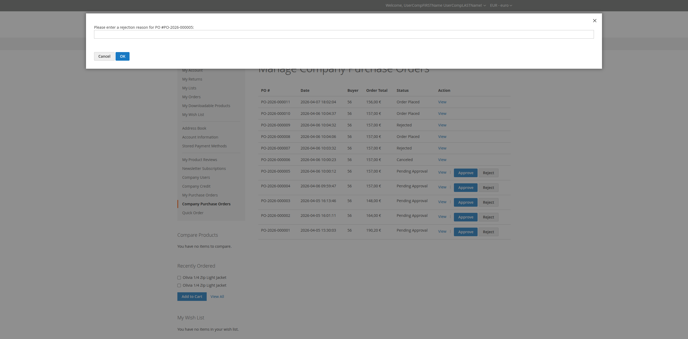

OrangeCat Purchase Order Module
User Manual & Documentation
User Manual & Documentation
The Orangecat Purchase Order module for Magento 2 introduces a robust B2B purchasing workflow. It allows companies to control spending by implementing purchase limits and an approval process for orders.
Key features include:
Admin settings can be accessed under Stores > Configuration > Orangecat > Company > Purchase Orders. Here you can enable the module globally and configure general parameters.

Figure 2.1: Global Configuration Settings
Specific limits for each buyer can be configured in the company user management section. These limits determine if an order requires approval.

Figure 2.2: Buyer Spending Limits Configuration
When a buyer places an order that exceeds their established limits, the system automatically creates a Purchase Order instead of a direct Magento Order. The buyer is notified on the success page.

Figure 3.1: Purchase Order Creation Success Page
Buyers can track their pending, approved, and rejected purchase orders from the My Purchase Orders section in their customer account.

Figure 3.2: Personal Purchase Order List
Buyers can view the details of their purchase orders, including items, totals, and the current status.

Figure 3.3: Personal Purchase Order Detailed View
Company Managers have the authority to review and action purchase orders submitted by their team members.
Managers can access all company purchase orders via the Company Purchase Orders menu. This view provides a complete overview of the company's pending acquisitions.

Figure 4.1: Company-wide Purchase Order Management List
A detailed view of the Purchase Order allows managers to verify items and check the Activity Log to understand the history of the document.

Figure 4.2: Full Details and Activity Log
To approve a Purchase Order, the manager clicks the "Approve" button and can provide a comment. Once approved, the Purchase Order is automatically converted into a standard Magento Order.

Figure 4.3: Approval Confirmation Modal
If a Purchase Order is not suitable, the manager can reject it, providing a reason for the buyer to review.

Figure 4.4: Rejection Confirmation Modal